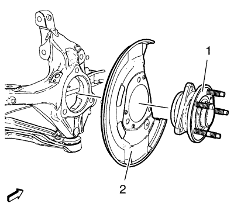

Sustitución del cubo y cojinete de la rueda delantera
Herramientas especiales
EN-45059 Kit de goniómetro de par de apriete
Si desea informarse sobre herramientas regionales equivalentes, consultar Herramientas especiales .
Procedimiento de desmontaje
- Elevar el vehículo y soportarlo de manera segura. Consultar Elevación y soporte en alto del vehículo .
- Desmontar el disco de freno. Consultar Sustitución del rotor de freno delantero .
- Desmonte el tornillo del sensor de velocidad de la rueda (2).
- Desmonte el sensor de la velocidad de la rueda (1) de la mangueta.
- Desmonte el árbol de accionamiento del cojinete/cubo de la ruedas delanteras. Consulte Sustitución del árbol impulsor de la rueda delantera - Lado izquierdo y/o Sustitución del árbol impulsor de la rueda delantera - Lado derecho.
- Desmonte y DESECHE los pernos del cojinete/cubo de la rueda delantera (1).

- Desmonte el cojinete/cubo de la rueda delantera (1) y la chapa de recubrimiento de frenos delanteros (2) de la mangueta.
Procedimiento de montaje
- Coloque la chapa de recubrimiento de frenos delanteros (2) y el conjunto de cojinete/cubo de la rueda delantera (1) en la mangueta.
Advertencia: Consulte Advertencia de torsión hasta el límite de elasticidad del seguro en la sección Prólogo.
Precaución:Consulte Precaución con las fijaciones en la sección Prólogo.
- Monte los NUEVOS pernos del cojinete/cubo de la rueda delantera (1).
- Apriete en 3 pases los pernos de cojinete/cubo (1). Utilice un goniómetro EN-45059.
| • | Primer paso a 90 N·m (66 lib. pie) |
- Monte el árbol de accionamiento de las ruedas en el cojinete/cubo de las ruedas delanteras. Consulte Sustitución del árbol impulsor de la rueda delantera - Lado izquierdo o Sustitución del árbol impulsor de la rueda delantera - Lado derecho .
- Monte el sensor de la velocidad de la rueda (1) en la mangueta.
- Monte el tornillo del sensor de velocidad de la rueda (2) y apriételo hasta 6 N·m (53 lib. pulg.).
- Montar el disco de freno. Consultar Sustitución del rotor de freno delantero .
- Bajar el vehículo.
| © Copyright Chevrolet. Reservados todos los derechos |